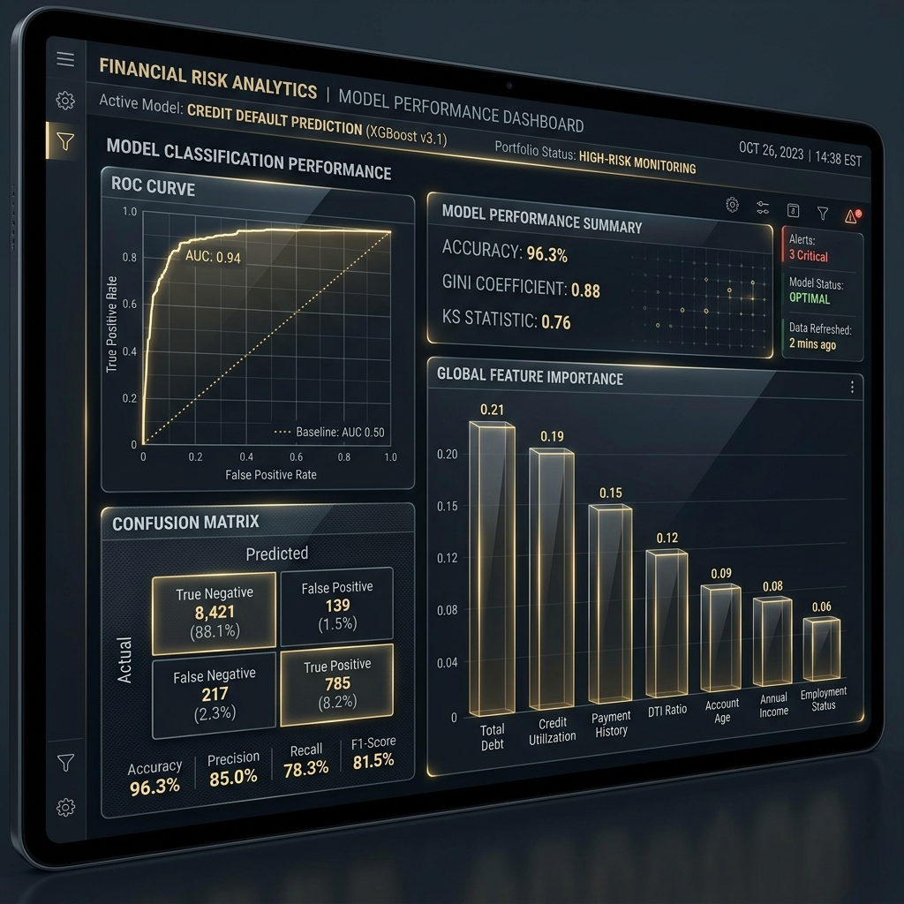

Student Performance Prediction Platform
PYTHON • SCIKIT-LEARN • AWS • DOCKER
Data Analytics & Machine Learning Specialist · LONDON, UK
Data Analytics, Machine Learning, and Cloud Engineering specialist with an MSc in Data Analytics (Distinction) from De Montfort University, UK. Experianced in developing end-to-end analytics, machine learning, and cloud-based solutions across predictive analytics, business intelligence, recommendation systems, and cloud deployment. Leveraging Python, SQL, Power BI, AWS, and modern MLOps practices to transform complex data into actionable insights, automated workflows, and scalable business solutions.
LONDON, UK · +44 77410 87366 · DA.SAMMOSES@GMAIL.COM · LINKEDIN · GITHUB ↗



A selection of end-to-end analytics, machine learning, and cloud-based solutions developed to solve real-world business problems and deliver actionable insights.
PYTHON • SCIKIT-LEARN • AWS • DOCKER
PYTHON • SQL • POSTGRESQL • POWER BI
PYTHON • XGBOOST • SQL
PYTHON • POWER BI
Independent Projects | Self-Directed Learning
GUVI (IIT-Madras Incubated EdTech) | Remote
De Montfort University, Leicester, UK
Manonmaniam Sundaranar University, India
Open to opportunities across Data Analytics, Data Science, Business Intelligence, and Machine Learning. Feel free to reach out for collaborations, projects, or professional opportunities.